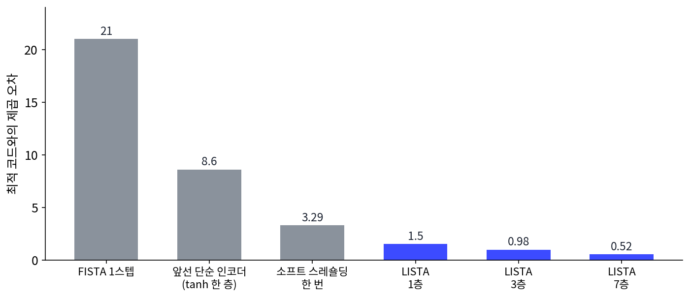
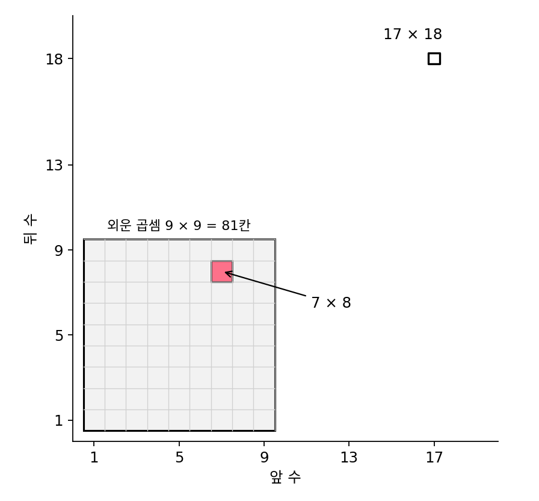
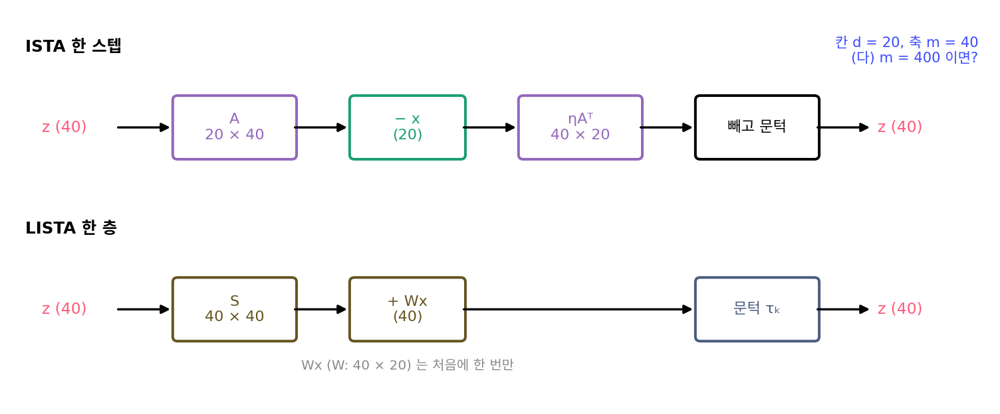
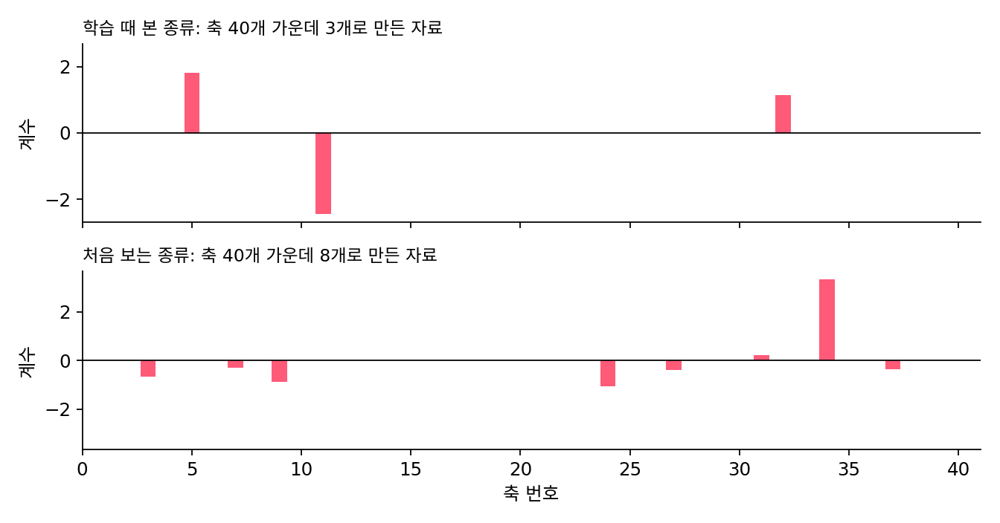
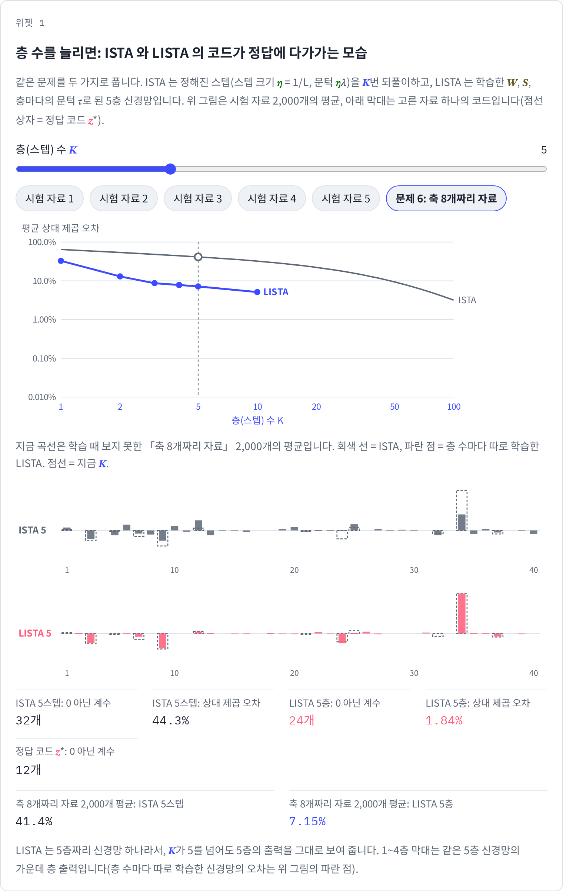

LISTA: ISTA 스텝의 행렬과 문턱을 배우면 층이 준다
언롤드 최적화의 그림에서 W, S, 문턱은 딕셔너리 A 에서 계산한 값이었다. ISTA 의 이 값들은 어떤 자료가 오든 답에 닿도록 고른 것이라, 이 장의 장난감 문제처럼 자료가 늘 축 3개짜리라는 사정은 쓰지 않는다. 같은 종류의 자료만 들어온다는 것을 안다면 다섯 층으로도 100스텝만큼 정확한 코드를 낼 수 있지 않을까?
역사: 코드를 실시간으로 내고 싶었다
2010년 무렵 희소 코드는 그림에서 특징을 뽑는 방법으로 인기가 높았지만, 그림 한 장을 알아보려면 작은 조각 하나하나마다 최소화 문제를 풀어야 해서 속도가 걸림돌이었다. 뉴욕 대학교 쿠란트 연구소의 그레고르(Karol Gregor)와 르쿤(Yann LeCun)은 ICML 2010 에 「희소 코드의 빠른 근사를 배우기(Learning Fast Approximations of Sparse Coding)」(399–406쪽)를 냈다. 그 초록에서 그들은 이 과정이 실시간으로 무늬를 알아보는 데 쓰기에는 너무 느릴 때가 많다고 적었다.
코드를 바로 내는 신경망을 따로 학습시키자는 생각은 이미 있었다. 앞선 방법(카부크추오글루 외, 2008)은 자료에 행렬 하나를 곱하고 tanh 를 씌우는 한 층짜리 인코더였는데, 그레고르와 르쿤은 이 인코더가 너무 단순해 거친 근사밖에 내지 못한다고 보았다. 그들은 인코더의 모양을 ISTA 에서 빌려 와서, ISTA 를 정해진 횟수만큼 펼친 꼴은 그대로 두고 W 와 S 를 학습으로 정했다. 이름은 학습한 ISTA(Learned ISTA), 줄여서 LISTA 다.

논문의 표에서 LISTA 는 한 층만으로 단순한 인코더의 오차를 절반 안팎으로 줄였고(축 100개에서 3.29 → 1.50, 축 400개에서 4.82 → 2.45), 층을 늘릴수록 오차가 더 줄었다. 논문 본문은 FISTA 가 LISTA 한 층의 오차에 닿으려면 축 100개에서 18스텝, 축 400개에서 35스텝이 걸린다며 「대략 20배 빠르다」고 적었다. 초록에 적힌 「같은 오차에 계산 10분의 1」은 LISTA 가 아니라 같은 논문의 다른 판, 좌표 하강법(리·오셔, 2009)을 펼쳐 학습한 판을 원래의 좌표 하강법과 견준 결과다. 두 판의 수치는 견주는 대상이 다르다.

그림 조각마다 최소화를 푸는 게 느리면, 더 빠른 컴퓨터를 쓰면 되지 않아요?

조각 하나에 되풀이가 수십 번 들고, 그림 한 장에는 조각이 아주 많아요. 한 장에 드는 스텝은 조각 수에 되풀이 수를 곱한 만큼이에요. 실시간으로 무늬를 알아보려면 기계가 몇 배 빨라지는 것으로는 모자랐어요.

코드를 바로 내는 인코더도 이미 있었다면서요. 그걸 더 크게 만들면요?
카부크추오글루 외의 인코더는 행렬 하나에 tanh 한 번이었어요. 층을 더 쌓는다면 어떤 모양으로 쌓을까요?

음, 아무 모양이나 쌓으면 그게 희소 코드를 흉내 낼지 알 수 없겠네요. 아, 그래서 ISTA 모양을 빌린 거예요? 펼친 꼴이 이미 답에 다가가는 계산이니까요.

그런데 학습하려면 정답 코드가 있어야 하잖아요. 그 정답은 결국 느린 방법으로 구해야 하는 거 아니에요?

그건 학습할 때 한 번이에요. 다 배운 뒤에는 새 조각마다 몇 층만 지나면 돼요. 그리고 수치를 읽을 때는 비교한 상대를 봐요. 「대략 20배」는 LISTA 와 FISTA, 「계산 10분의 1」은 펼친 좌표 하강법과 원래 좌표 하강법이에요.

느린 계산을 학습 때로 몰아 두는 거네요. 그럼 우리 장난감에서는 ISTA 100스텝 대신 몇 층이면 같은 오차까지 갈 수 있어요?
LISTA 다섯 층으로 같은 문제 풀기
장난감 문제로 직접 확인해 보자. LISTA 의 층은 ISTA 의 스텝과 같은 식을 쓰되, W, S, 층마다의 문턱 τₖ(타우 케이)를 학습으로 정한다. 그레고르·르쿤처럼 W 와 S 는 모든 층이 함께 쓴다.
학습 전 값을 ISTA 의 값으로 두었으므로, 학습하기 전의 LISTA K층은 ISTA K스텝과 똑같은 코드를 낸다. 학습 자료 20,000개로 층 수마다 따로 학습시킨 뒤(Adam, 4,000스텝, 씨앗 고정), 학습에 쓰지 않은 시험 자료 2,000개에서 오차를 쟀다.
| 층(스텝) 수 K | 1 | 2 | 3 | 4 | 5 | 10 |
|---|---|---|---|---|---|---|
| ISTA K스텝 | 69.6% | 59.3% | 52.9% | 48.2% | 44.4% | 31.4% |
| LISTA K층(학습 후) | 18.2% | 4.87% | 2.42% | 2.03% | 1.59% | 0.57% |
| ISTA 가 그 LISTA 의 오차에 처음 닿는 스텝 | 19 | 56 | 65 | 87 |
LISTA 다섯 층의 오차는 1.59%로, ISTA 가 65스텝을 돌아야 닿는 오차다. 한 층만으로도 ISTA 19스텝만큼 간다. 학습 자료에서의 오차(5층 1.40%)와 시험 자료에서의 오차(1.59%)가 비슷하니, 학습 자료 하나하나를 외운 것이 아니라 축 3개짜리 자료 전체에 통하는 지름길을 배운 것이다. 배운 값도 들여다볼 만하다. 다섯 층의 문턱 평균은 0.221, 0.150, 0.113, 0.089, 0.060 으로 층을 지날수록 작아지고, 모두 ISTA 의 문턱 0.0199 보다 크다. 앞쪽 층은 아주 큰 계수만 통과시켜 쓸 축을 먼저 고르고, 뒤쪽 층은 문턱을 낮춰 계수의 크기를 다듬는다. 이렇게 되풀이 알고리즘을 펼친 층의 행렬과 문턱을 자료로 학습해, 적은 층으로 그 알고리즘의 답을 흉내 내는 신경망을 LISTA (학습한 ISTA, learned ISTA)라 한다.
위젯에서 층 수를 1부터 올려 보면, ISTA 의 코드는 처음에 축 대부분에 계수를 주었다가 수십 스텝에 걸쳐 하나씩 0으로 떨어뜨린다. LISTA 의 코드는 첫 층부터 쓸 축이 적고, 다섯 층 안에 정답 코드의 막대 가까이 간다. 다만 LISTA 다섯 층의 코드는 시험 자료에서 평균 7.5개의 계수가 0이 아니어서, 3.2개인 정답 코드보다 많다. LISTA 는 정답 코드와의 제곱 거리를 줄이도록 배웠을 뿐 0의 개수를 세라고 배우지 않았으므로, 작은 계수 몇 개가 남는다.
ML에서: 끝까지 펼치면 고정점, 깊은 평형 모델
LISTA 는 층 수를 줄이는 방향으로 갔지만, 거꾸로 층 수를 늘려 같은 층을 끝없이 쌓으면 어떻게 될까? ISTA 처럼 같은 상자를 되풀이하는 층이 한 점으로 모인다면, 끝없이 쌓은 신경망의 출력은 그 점, 곧 z* = f(z*, x) 를 만족하는 고정점이다. 바이(Shaojie Bai)·콜터(J. Zico Kolter)·콜툰(Vladlen Koltun)의 「깊은 평형 모델(Deep Equilibrium Models)」(NeurIPS 2019)은 여러 깊은 순서열 모델(문장처럼 차례가 있는 자료를 다루는 모델)의 숨은 층들이 어떤 고정점 쪽으로 다가간다는 관찰에서 출발했다. 이 모델은 층을 쌓는 대신 고정점을 방정식 풀이로 바로 찾고, 그래디언트도 층마다 거꾸로 거슬러 가지 않고 고정점의 식에서 바로 구하므로, 학습에 드는 메모리가 층 수와 상관없이 일정하다. 초록에 따르면 WikiText-103 같은 언어 모델 실험에서 메모리를 최대 88% 줄였다. 되풀이가 정말 한 점으로 모이는지는 그 층이 거리를 줄이는 함수인지에 달려 있다.
문제 4. 구구단을 외운 사람
덧셈만 할 줄 아는 사람은 7 × 8 을 8 을 일곱 번 더해 구하지만, 구구단을 외운 사람은 한 번에 답한다. (가) 덧셈만 하는 사람은 7 × 8 에 덧셈을 몇 번 하는가? 구구단을 외운 사람이 17 × 18 을 만나면 어떻게 되는가? (나) 두 사람을 ISTA 와 LISTA 에 맞대어 보라.

(가)는 0 에서 8 을 일곱 번 더하니까 덧셈 일곱 번이에요. 구구단은 9 × 9 까지라 17 × 18 은 외운 칸이 없어요. 다시 더하든지, 10 × 18 + 7 × 18 처럼 쪼개야 해요.
외운 사람이 7 × 8 을 빨리 답한 건 무엇 덕분이었죠?

자주 나오는 곱셈을 미리 외워 둔 덕분이요. 표 안에서는 한 번에, 밖에서는 외운 게 쓸모없고, 덧셈은 느려도 어떤 곱셈이든 되고요. 아, ISTA 가 덧셈하는 사람이고 LISTA 가 구구단 외운 사람이네요. LISTA 는 학습 자료에서 자주 나오는 꼴을 외워서 층을 줄인 거고요.
그럼 LISTA 한테 학습 때 못 본 자료를 주면 17 × 18 을 만난 거야?
그건 아래 문제 6 에서 장난감 문제로 직접 재 봐요.
문제 5. 다섯 층은 정말 싼가
이 장의 장난감 문제(칸 d = 20, 축 m = 40)에서 곱셈 횟수를 센다. (가) ISTA 한 스텝과 LISTA 한 층은 곱셈을 몇 번 하는가? LISTA 의 Wx 는 처음에 한 번만 계산한다. (나) ISTA 100스텝과 LISTA 5층의 곱셈 수는? (다) 축이 m = 400 개라면 한 스텝과 한 층의 곱셈 수는 어떻게 되는가?

ISTA 한 스텝은 Az 가 20 × 40 = 800번, Aᵀ(Az − x) 가 또 800번이라 1,600번이에요. LISTA 한 층은 Sz 가 40 × 40 = 1,600번이요. 똑같네요.
LISTA 는 처음에 Wx 800번이 더 들어. 그래서 5층이면 800 + 5 × 1,600 = 8,800번. ISTA 100스텝은 160,000번이니까 18.2배 차이야.
(다)는요? 그레고르와 르쿤도 축 400개로 실험했어요.

축이 열 배가 되면 ISTA 도 LISTA 도 똑같이 열 배씩 무거워지지 않을까요? 그러면 18배 차이는 그대로고요.
세어 볼게. m = 400 이면 ISTA 한 스텝은 2 × 20 × 400 = 16,000번인데, LISTA 한 층은 400 × 400 = 160,000번이야. 한 층이 한 스텝의 열 배야.

열 배씩 무거워지는 게 아니었네. S 는 축 × 축이라 축 수의 제곱으로 커지고, ISTA 는 A 를 두 번 곱해서 같은 계산을 하니까 d × m 의 두 배로만 커져. m 이 d 보다 훨씬 크면 S 가 더 무거워.
그래서 「층 수가 몇 분의 일」과 「계산이 몇 분의 일」은 다른 말이에요. 그레고르와 르쿤도 S 가 무겁다는 걸 알고, S 의 작은 원소를 0으로 묶어 두거나 S 를 두 얇은 행렬의 곱으로 바꾸는 실험을 함께 실었어요.

친구 이사를 도울 때 상자가 다섯 개뿐이라고 좋아했는데, 하나하나가 냉장고만 해서 잔짐 백 개 나르는 것보다 힘들었어요. 상자 수가 층 수고, 상자 하나의 무게가 S 예요.
문제 6. 학습 때 못 본 자료
축 3개짜리 자료로만 배운 LISTA 에 이번에는 축 8개를 골라 만든 자료 2,000개를 넣는다. (가) 축 3개짜리 시험 자료에서 1.59%였던 LISTA 5층의 오차는 어떻게 될까? 먼저 예상한 뒤 위젯의 「문제 6」 단추로 확인하라. (나) ISTA 는 몇 스텝이면 그 오차에 닿는가? 100스텝, 500스텝이면? (다) LISTA 를 10층으로 늘리면 얼마나 나아지는가?

딕셔너리 A 는 그대로고, W 와 S 도 A 에서 출발해 배운 거니까 크게 다르지 않을 것 같아요. 2% 언저리?
위젯으로 확인해 볼까요?
7.15% 예요. 네 배 넘게 나빠졌어요.
생각보다 훨씬 크네. 그럼 ISTA 는? ISTA 도 처음 보는 자료라 느려질 텐데.
ISTA 는 7.15% 에 닿는 데 62스텝이야. 축 3개짜리에서 1.59% 에 닿을 때 65스텝이던 것과 비슷해. 그럼 LISTA 가 여전히 다섯 층으로 60스텝 넘게 버는 거네. 별로 손해 본 게 없는데?
더 정확한 코드가 필요해지면 두 방법은 각각 무엇을 할 수 있나요?
ISTA 는 그냥 더 돌면 돼요. 100스텝이면 3.18%, 200스텝이면 0.74%, 500스텝이면 0.07% 예요. LISTA 는… 10층으로 다시 학습하면 5.13% 예요.
이상하다. 축 3개짜리에서는 5층이 1.59%, 10층이 0.57% 로 세 배 가까이 줄었는데, 축 8개짜리에서는 7.15% 가 5.13% 로밖에 안 줄었어.
LISTA 의 층 수를 늘린다는 건 무엇을 늘리는 거죠? ISTA 의 스텝을 늘리는 것과 같은 일인가요?
음… LISTA 는 층을 늘려도 배운 자료, 그러니까 축 3개짜리 자료에 더 잘 맞추도록 다시 배우는 거예요.
ISTA 의 스텝 하나는 무엇을 향해 가죠?

어떤 자료든 그 자료의 정답 코드요. 그래서 끝까지 돌면 닿고요. 아, LISTA 의 층은 처음 보는 자료 쪽으로 가는 스텝이 아니었네요. 같은 일이 아니에요.
구구단 문제가 떠오르네. LISTA 는 외운 범위 밖에서도 대충은 맞히는데, 정확히 맞히려면 결국 덧셈으로 돌아가야 해.
학습한 언롤드 최적화는 층 수를 버는 대신 「끝까지 돌면 정답에 닿는다」는 보장을 내려놓은 거예요. 위젯 1에서 문제 6 설정을 불러와 층 수 K 를 10까지 올려 보고, 같은 자리의 ISTA 곡선과 비교해 보세요.
